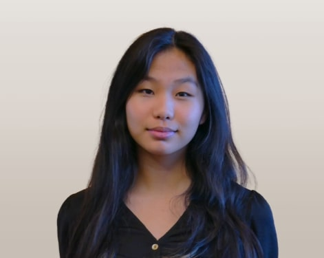
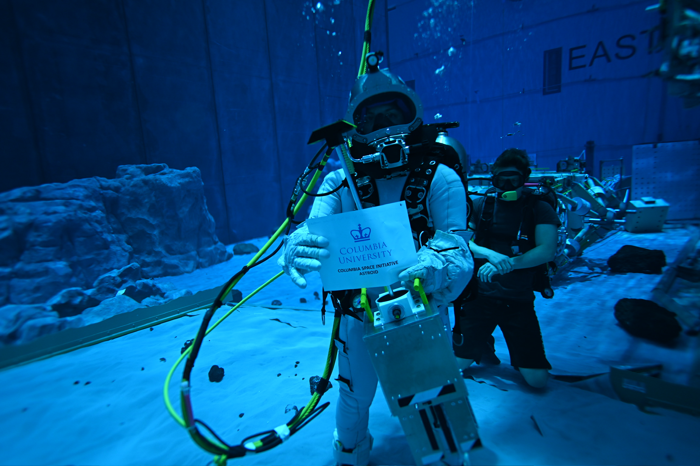
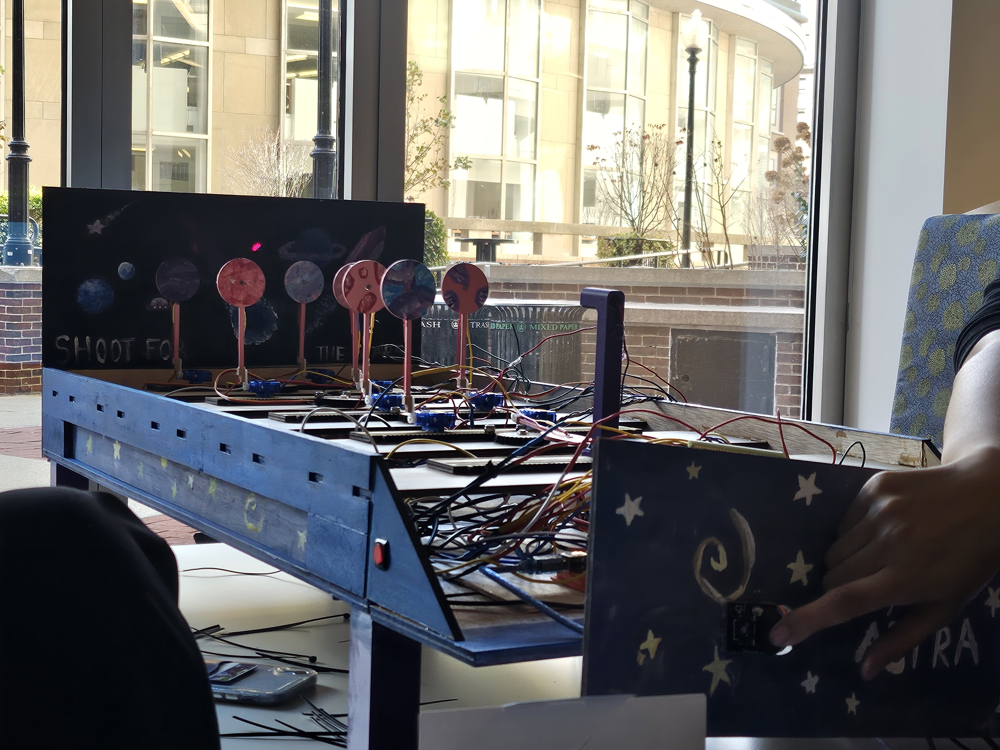

Mechanical & Aerospace Engineering, Columbia University
LinkedIn / Email / CV Available Upon Request
Website is currently undergoing updates. Please reach out to connect! el [dot] eileenlin [at] gmail [dot] com

I am currently an undergraduate researcher in the Robotics and Rehabilitation Laboratory advised by Prof. Sunil K. Agrawal. I am working on a cable-assisted torso stablizing system for seated spinal cord injury patients. In the past, I was a mechanical engineering intern at Lutron Electronics, where I worked on improving exisitng products and designing jigs/mounts for RF work. I have also created and tested EVA tools for astronauts at NASA's Neutral Buoyancy Laboratory as part of the Micro-g NExT challenge .
Outside of my technical work, I serve as secretary for the Columbia Space Initiative and as producer for the podcast, This is Rocket Science. I am passionate about STEM outreach, and I create educational programming for elementary to high school students in NYC.
Research Interests: robotics, human-centered interaction, and design for aerospace tools and applications. Currently looking for Summer 2027 opportunities in aerospace engineering, robotics, and research.
Designing a modular motorized cable-driven torso support system for wheelchair users. Contribution: User ergonomics, mechanical design, control architecture, rapid prototyping, inverse kinematics analysis
Designed, manufacuted, and validated through functional testing of an ergonmic capture-and-retention mechanism that enables one-handed installation of EVA tools and single fault tolerance. Contribution: Project mangement, design review, functional testing, and proposal writing

Designed and manufactured a lunar regolith stamping device designed to preserve grain orientation. Contribution: Developed an adhesive solution to collect regolith samples under extreme conditions, assisted with machinging, co-authored NASA accepted proposal.

First-year engineering project. Created a retro-arcade target shooting game with Sharanya Chatterjee, Hyunwoo Lee, Hannah Moon, and Albert Lessler. Contribution: prototyping, design, CAD (OnShape), soldering, laser cutting, and electronics integration (Adruino, CdS photoresistor, wire management).